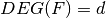
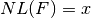
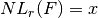
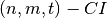
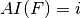
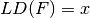
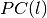

Summary¶
Cryptographic criteria Table lists the member functions related to these criteria.
| Cryptographic criteria | |
|---|---|
| SYNTAX | DESCRIPTION |
void deg(int& d, VBF& F) |
 |
void nl(NTL::RR& x, VBF& F) |
 |
void nlr(long& x, VBF& F, int r) |
 |
void Bal(int& bal, VBF& F) |
If F is balanced returns 1, otherwise 0 |
void CI(int& t, VBF& F) |
F is an  |
void AI(int& i, VBF& F) |
 |
void maxAC(NTL::ZZ& x, VBF& F) |
F has absolute indicator x |
void sigma(NTL::ZZ& x, VBF& F) |
F has sum-of-squares indicator x |
void ld(NTL::RR& x, VBF& F) |
 |
void PC(int& l, VBF& F) |
F satisfies the  |
Member functions Table lists the member functions related to bounds and other properties of above criteria.
| Member functions of the cryptographic criteria | |
|---|---|
| SYNTAX | DESCRIPTION |
void SpectralRadius(NTL::ZZ& x, VBF& F) |
Spectral Radius |
NTL::RR nlmax(VBF& F) |
Maximum possible nonlinearity |
void typenl(int& typenl, VBF& F) |
1=Bent, 2=Almost Bent, 3=Linear |
int aimax(VBF& F) |
Maximum possible algebraic immunity |
NTL::ZZ maxACmax(VBF& F) |
Maximum possible absolute indicator |
NTL::ZZ maxsigma(VBF& F) |
Maximum possible sum-of-square indicator |
NTL::ZZ minsigma(VBF& F) |
Minimum possible sum-of-square indicator |
NTL::RR ldmax(VBF& F) |
Maximum possible linearity distance |